Inhalt Index DeskTop Bronstein

 Funktionalanalysis Nichtlineare Operatoren Monotone Operatoren in Banach-Räumen
Funktionalanalysis Nichtlineare Operatoren Monotone Operatoren in Banach-Räumen


Existenzaussagen für Lösungen von Operatorengleichungen mit monotonem Operator können hier nur exemplarisch angegeben werden: Ist der Operator  , der einen reellen separablen BANACH-Raum
, der einen reellen separablen BANACH-Raum  in 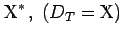 abbildet, monoton, demistetig und koerzitiv, dann hat die Gleichung T(x)=f für beliebiges
in 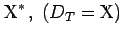 abbildet, monoton, demistetig und koerzitiv, dann hat die Gleichung T(x)=f für beliebiges  eine Lösung. Ist zudem der Operator T streng monoton, dann ist die Lösung sogar eindeutig, in diesem Falle existiert also der inverse Operator 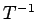.
eine Lösung. Ist zudem der Operator T streng monoton, dann ist die Lösung sogar eindeutig, in diesem Falle existiert also der inverse Operator 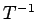.
Für einen monotonen demistetigen Operator 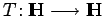 im HILBERT-Raum  mit 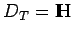 gilt 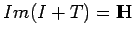, wobei (I+T)-1 stetig ist. Wenn T als streng monoton vorausgesetzt wird, dann ist T-1 bijektiv mit stetigem .
mit 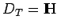 gilt 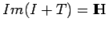, wobei (I+T)-1 stetig ist. Wenn T als streng monoton vorausgesetzt wird, dann ist T-1 bijektiv mit stetigem .
Konstruktive Näherungsmethoden für die Lösung der Gleichung T(x)=0 mit monotonem Operator T im HILBERT-Raum basieren auf der Idee des GALERKIN-Verfahrens oder Lit. 12.11, 12.21.
Mit dieser Theorie kann man ebenfalls mehrdeutige Operatoren 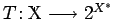 behandeln, auf die der Monotoniebegriff durch 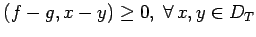 und 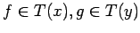 verallgemeinert wird (s. Lit. 12.14).